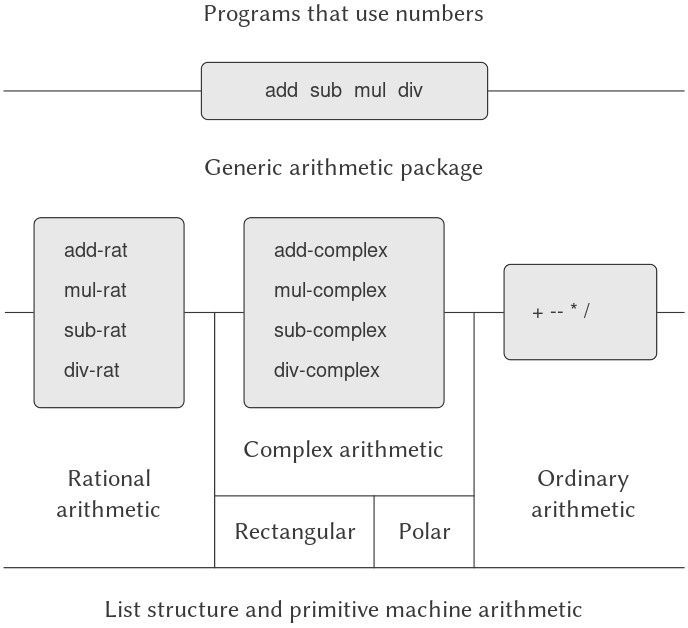
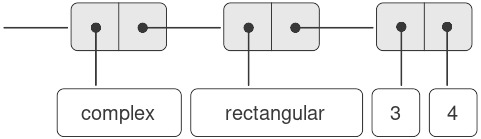
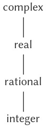
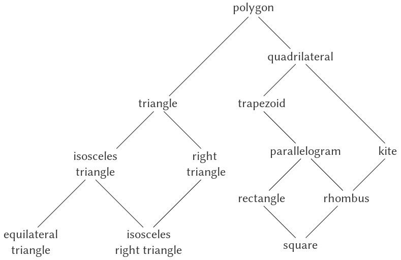

2.5 Các hệ thống với Generic Operations (toán tử tổng quát)
Trong phần trước, chúng ta đã thấy cách thiết kế các hệ thống mà trong đó các đối tượng dữ liệu có thể được biểu diễn theo nhiều cách khác nhau. Ý tưởng then chốt là liên kết mã lệnh xác định các phép toán dữ liệu với nhiều cách biểu diễn thông qua các generic interface procedures (thủ tục giao diện tổng quát). Bây giờ, chúng ta sẽ thấy cách sử dụng cùng một ý tưởng này không chỉ để định nghĩa các phép toán tổng quát trên nhiều cách biểu diễn khác nhau, mà còn để định nghĩa các phép toán tổng quát trên nhiều loại đối số khác nhau. Chúng ta đã thấy một số package (gói) phép toán số học khác nhau: số học primitive (+, -, *, /) được tích hợp sẵn trong ngôn ngữ của chúng ta, số học rational-number (add-rat, sub-rat, mul-rat, div-rat) ở mục 2.1.1, và số học complex-number mà chúng ta đã cài đặt ở mục 2.4.3. Giờ đây, chúng ta sẽ sử dụng kỹ thuật data-directed (điều khiển theo dữ liệu) để xây dựng một package các phép toán số học kết hợp tất cả các package số học mà chúng ta đã xây dựng.
Hình 2.23 cho thấy cấu trúc của hệ thống mà chúng ta sẽ xây dựng. Hãy chú ý đến các abstraction barriers (rào chắn trừu tượng). Từ góc nhìn của một người sử dụng “numbers”, chỉ có một procedure add duy nhất hoạt động trên bất kỳ số nào được cung cấp. Add là một phần của generic interface cho phép các package số học thường, số học rational, và số học complex được truy cập một cách thống nhất bởi các chương trình sử dụng numbers. Bất kỳ package số học riêng lẻ nào (chẳng hạn như package complex) cũng có thể được truy cập thông qua các generic procedures (chẳng hạn như add-complex) kết hợp các package được thiết kế cho các cách biểu diễn khác nhau (chẳng hạn như rectangular và polar). Hơn nữa, cấu trúc của hệ thống là dạng cộng gộp (additive), vì vậy ta có thể thiết kế các package số học riêng biệt và kết hợp chúng để tạo ra một hệ thống số học tổng quát.

Figure 2.23: Generic arithmetic system.
2.5.1 Generic Arithmetic Operations
Nhiệm vụ thiết kế các generic arithmetic operations (phép toán số học tổng quát) tương tự như việc thiết kế các generic complex-number operations. Chúng ta muốn, chẳng hạn, có một generic addition procedure add hoạt động giống như phép cộng primitive + trên các số thường, giống như add-rat trên các số rational, và giống như add-complex trên các số complex. Chúng ta có thể cài đặt add và các phép toán số học tổng quát khác bằng cách theo cùng chiến lược mà chúng ta đã dùng ở mục 2.4.3 để cài đặt các generic selectors cho số complex. Chúng ta sẽ gắn một type tag (nhãn kiểu) cho mỗi loại số và khiến generic procedure phân phối (dispatch) đến package thích hợp tùy theo kiểu dữ liệu của các đối số.
Các generic arithmetic procedures được định nghĩa như sau:
(define (add x y) (apply-generic 'add x y))
(define (sub x y) (apply-generic 'sub x y))
(define (mul x y) (apply-generic 'mul x y))
(define (div x y) (apply-generic 'div x y))
Chúng ta bắt đầu bằng cách cài đặt một package để xử lý ordinary numbers, tức là các số primitive của ngôn ngữ. Chúng ta sẽ gắn nhãn cho chúng bằng ký hiệu scheme-number. Các phép toán số học trong package này là các primitive arithmetic procedures (vì vậy không cần định nghĩa thêm các thủ tục để xử lý các số không gắn nhãn). Vì các phép toán này mỗi phép nhận hai đối số, chúng được cài đặt trong bảng với khóa là danh sách (scheme-number scheme-number):
(define (install-scheme-number-package)
(define (tag x)
(attach-tag 'scheme-number x))
(put 'add '(scheme-number scheme-number)
(lambda (x y) (tag (+ x y))))
(put 'sub '(scheme-number scheme-number)
(lambda (x y) (tag (- x y))))
(put 'mul '(scheme-number scheme-number)
(lambda (x y) (tag (* x y))))
(put 'div '(scheme-number scheme-number)
(lambda (x y) (tag (/ x y))))
(put 'make 'scheme-number
(lambda (x) (tag x)))
'done)
Người dùng của Scheme-number package sẽ tạo ra các số thường (được gắn nhãn) thông qua procedure:
(define (make-scheme-number n)
((get 'make 'scheme-number) n))
Bây giờ khi khung sườn của hệ thống số học tổng quát đã sẵn sàng, chúng ta có thể dễ dàng bổ sung các loại số mới. Dưới đây là một package thực hiện số học rational. Hãy chú ý rằng, nhờ tính cộng gộp (additivity), chúng ta có thể sử dụng nguyên vẹn mã số học rational từ mục 2.1.1 làm các thủ tục nội bộ trong package:
(define (install-rational-package)
;; internal procedures
(define (numer x) (car x))
(define (denom x) (cdr x))
(define (make-rat n d)
(let ((g (gcd n d)))
(cons (/ n g) (/ d g))))
(define (add-rat x y)
(make-rat (+ (* (numer x) (denom y))
(* (numer y) (denom x)))
(* (denom x) (denom y))))
(define (sub-rat x y)
(make-rat (- (* (numer x) (denom y))
(* (numer y) (denom x)))
(* (denom x) (denom y))))
(define (mul-rat x y)
(make-rat (* (numer x) (numer y))
(* (denom x) (denom y))))
(define (div-rat x y)
(make-rat (* (numer x) (denom y))
(* (denom x) (numer y))))
;; interface to rest of the system
(define (tag x) (attach-tag 'rational x))
(put 'add '(rational rational)
(lambda (x y) (tag (add-rat x y))))
(put 'sub '(rational rational)
(lambda (x y) (tag (sub-rat x y))))
(put 'mul '(rational rational)
(lambda (x y) (tag (mul-rat x y))))
(put 'div '(rational rational)
(lambda (x y) (tag (div-rat x y))))
(put 'make 'rational
(lambda (n d) (tag (make-rat n d))))
'done)
(define (make-rational n d)
((get 'make 'rational) n d))
Chúng ta có thể cài đặt một package tương tự để xử lý số complex, sử dụng nhãn complex. Khi tạo package, chúng ta lấy từ bảng ra các phép toán make-from-real-imag và make-from-mag-ang đã được định nghĩa bởi các package rectangular và polar. Tính cộng gộp cho phép chúng ta sử dụng, như các phép toán nội bộ, cùng các procedure add-complex, sub-complex, mul-complex, và div-complex từ mục 2.4.1.
(define (install-complex-package)
;; imported procedures from rectangular
;; and polar packages
(define (make-from-real-imag x y)
((get 'make-from-real-imag
'rectangular)
x y))
(define (make-from-mag-ang r a)
((get 'make-from-mag-ang 'polar)
r a))
;; internal procedures
(define (add-complex z1 z2)
(make-from-real-imag
(+ (real-part z1) (real-part z2))
(+ (imag-part z1) (imag-part z2))))
(define (sub-complex z1 z2)
(make-from-real-imag
(- (real-part z1) (real-part z2))
(- (imag-part z1) (imag-part z2))))
(define (mul-complex z1 z2)
(make-from-mag-ang
(* (magnitude z1) (magnitude z2))
(+ (angle z1) (angle z2))))
(define (div-complex z1 z2)
(make-from-mag-ang
(/ (magnitude z1) (magnitude z2))
(- (angle z1) (angle z2))))
;; interface to rest of the system
(define (tag z) (attach-tag 'complex z))
(put 'add '(complex complex)
(lambda (z1 z2)
(tag (add-complex z1 z2))))
(put 'sub '(complex complex)
(lambda (z1 z2)
(tag (sub-complex z1 z2))))
(put 'mul '(complex complex)
(lambda (z1 z2)
(tag (mul-complex z1 z2))))
(put 'div '(complex complex)
(lambda (z1 z2)
(tag (div-complex z1 z2))))
(put 'make-from-real-imag 'complex
(lambda (x y)
(tag (make-from-real-imag x y))))
(put 'make-from-mag-ang 'complex
(lambda (r a)
(tag (make-from-mag-ang r a))))
'done)
Các chương trình bên ngoài complex-number package có thể tạo số complex từ các phần real và imaginary hoặc từ magnitude và angle. Hãy chú ý cách các procedures (thủ tục) nền tảng, vốn được định nghĩa ban đầu trong các package rectangular và polar, được export sang complex package, và từ đó export ra thế giới bên ngoài.
(define (make-complex-from-real-imag x y)
((get 'make-from-real-imag 'complex) x y))
(define (make-complex-from-mag-ang r a)
((get 'make-from-mag-ang 'complex) r a))
Những gì chúng ta có ở đây là một hệ thống tag (nhãn) hai cấp. Một số complex điển hình, chẳng hạn như $3 + 4i$ ở dạng rectangular, sẽ được biểu diễn như trong Hình 2.24. Tag bên ngoài (complex) được dùng để điều hướng số này đến complex package. Khi đã ở trong complex package, tag tiếp theo (rectangular) được dùng để điều hướng số này đến rectangular package. Trong một hệ thống lớn và phức tạp, có thể tồn tại nhiều cấp độ, mỗi cấp được kết nối với cấp tiếp theo thông qua các generic operations (toán tử tổng quát). Khi một đối tượng dữ liệu được truyền “xuống dưới”, tag bên ngoài được dùng để điều hướng nó đến package thích hợp sẽ bị loại bỏ (bằng cách áp dụng contents), và cấp tag tiếp theo (nếu có) sẽ trở nên hiển thị để được sử dụng cho việc phân phối (dispatch) tiếp theo.

Figure 2.24: Representation of $3 + 4i$ in rectangular form.
Trong các package ở trên, chúng ta đã sử dụng add-rat, add-complex và các arithmetic procedures khác chính xác như khi được viết ban đầu. Tuy nhiên, khi các định nghĩa này trở thành nội bộ của các installation procedures khác nhau, chúng không còn cần những tên khác biệt nhau nữa: chúng ta có thể đơn giản đặt tên chúng là add, sub, mul, và div trong cả hai package.
2.5.2 Combining Data of Different Types
Chúng ta đã thấy cách định nghĩa một hệ thống số học thống nhất bao gồm ordinary numbers, complex numbers, rational numbers, và bất kỳ loại số nào khác mà chúng ta có thể nghĩ ra, nhưng chúng ta đã bỏ qua một vấn đề quan trọng. Các phép toán mà chúng ta đã định nghĩa cho đến nay xử lý các kiểu dữ liệu khác nhau như thể chúng hoàn toàn độc lập. Do đó, có các package riêng biệt để cộng, chẳng hạn, hai ordinary numbers hoặc hai complex numbers. Điều mà chúng ta chưa xem xét là thực tế rằng việc định nghĩa các phép toán vượt qua ranh giới kiểu dữ liệu là có ý nghĩa, chẳng hạn như cộng một complex number với một ordinary number. Chúng ta đã rất cẩn trọng để đưa vào các rào chắn giữa các phần của chương trình để chúng có thể được phát triển và hiểu một cách riêng biệt. Chúng ta muốn giới thiệu các phép toán cross-type (giữa các kiểu) theo một cách được kiểm soát cẩn thận, để có thể hỗ trợ chúng mà không vi phạm nghiêm trọng các ranh giới module của chúng ta.
Một cách để xử lý các phép toán cross-type là thiết kế một procedure khác nhau cho mỗi tổ hợp kiểu có thể mà phép toán đó hợp lệ. Ví dụ, chúng ta có thể mở rộng complex-number package để nó cung cấp một procedure cho phép cộng complex numbers với ordinary numbers và cài đặt procedure này vào bảng bằng tag (complex scheme-number)1:
(define (add-complex-to-schemenum z x)
(make-from-real-imag (+ (real-part z) x)
(imag-part z)))
(put 'add
'(complex scheme-number)
(lambda (z x)
(tag (add-complex-to-schemenum z x))))
Kỹ thuật này hoạt động, nhưng nó cồng kềnh. Với một hệ thống như vậy, chi phí để giới thiệu một kiểu mới không chỉ là việc xây dựng package các procedures cho kiểu đó mà còn là việc xây dựng và cài đặt các procedures thực hiện các phép toán cross-type. Điều này có thể dễ dàng tạo ra nhiều mã hơn so với việc định nghĩa các phép toán trên chính kiểu dữ liệu đó. Phương pháp này cũng làm suy yếu khả năng kết hợp các package riêng biệt một cách cộng gộp, hoặc ít nhất là hạn chế mức độ mà những người triển khai các package riêng lẻ cần phải tính đến các package khác. Chẳng hạn, trong ví dụ trên, có vẻ hợp lý khi xử lý các phép toán hỗn hợp giữa complex numbers và ordinary numbers nên là trách nhiệm của complex-number package. Tuy nhiên, việc kết hợp rational numbers và complex numbers có thể được thực hiện bởi complex package, bởi rational package, hoặc bởi một package thứ ba sử dụng các phép toán được trích xuất từ hai package này. Việc xây dựng các chính sách nhất quán về phân chia trách nhiệm giữa các package có thể là một nhiệm vụ quá sức trong việc thiết kế các hệ thống có nhiều package và nhiều phép toán cross-type.
Chúng ta cũng phải cung cấp một procedure gần như giống hệt để xử lý các kiểu (scheme-number complex).
Coercion
Trong tình huống tổng quát khi các operations (phép toán) hoàn toàn không liên quan tác động lên các types (kiểu dữ liệu) hoàn toàn không liên quan, việc cài đặt các explicit cross-type operations (phép toán tường minh giữa các kiểu), dù cồng kềnh, vẫn là điều tốt nhất mà ta có thể hy vọng. May mắn thay, chúng ta thường có thể làm tốt hơn bằng cách tận dụng cấu trúc bổ sung có thể tiềm ẩn trong hệ thống kiểu của mình. Thường thì các data types khác nhau không hoàn toàn độc lập, và có thể tồn tại những cách để các đối tượng của một kiểu được xem như thuộc về một kiểu khác. Quá trình này được gọi là coercion (ép kiểu). Ví dụ, nếu chúng ta được yêu cầu kết hợp số học giữa một ordinary number và một complex number, ta có thể xem ordinary number đó như một complex number có phần imaginary bằng 0. Điều này biến vấn đề thành việc kết hợp hai complex numbers, vốn có thể được xử lý theo cách thông thường bởi complex-arithmetic package.
Nói chung, chúng ta có thể hiện thực ý tưởng này bằng cách thiết kế các coercion procedures (thủ tục ép kiểu) để biến đổi một đối tượng của kiểu này thành một đối tượng tương đương của kiểu khác. Dưới đây là một coercion procedure điển hình, biến đổi một ordinary number đã cho thành một complex number có phần real đó và phần imaginary bằng 0:
(define (scheme-number->complex n)
(make-complex-from-real-imag
(contents n) 0))
Chúng ta cài đặt các coercion procedures này vào một coercion table (bảng ép kiểu) đặc biệt, được đánh chỉ mục theo tên của hai kiểu:
(put-coercion 'scheme-number 'complex
scheme-number->complex)
(Chúng ta giả định rằng có các procedures put-coercion và get-coercion sẵn có để thao tác với bảng này.) Thông thường, một số ô trong bảng sẽ trống, vì không phải lúc nào cũng có thể ép một đối tượng dữ liệu bất kỳ của mỗi kiểu sang tất cả các kiểu khác. Ví dụ, không có cách nào để ép một complex number bất kỳ thành một ordinary number, vì vậy sẽ không có procedure complex->scheme-number tổng quát nào được đưa vào bảng.
Khi coercion table đã được thiết lập, chúng ta có thể xử lý coercion một cách thống nhất bằng cách sửa đổi procedure apply-generic ở mục 2.4.3. Khi được yêu cầu áp dụng một phép toán, trước tiên chúng ta kiểm tra xem phép toán đó có được định nghĩa cho các kiểu của đối số hay không, giống như trước đây. Nếu có, ta phân phối (dispatch) đến procedure tìm thấy trong operation-and-type table. Nếu không, ta thử coercion. Để đơn giản, ta chỉ xét trường hợp có hai đối số2. Ta kiểm tra coercion table để xem các đối tượng của kiểu thứ nhất có thể ép sang kiểu thứ hai hay không. Nếu có, ta ép đối số thứ nhất và thử lại phép toán. Nếu các đối tượng của kiểu thứ nhất không thể ép sang kiểu thứ hai, ta thử ép theo chiều ngược lại để xem có thể ép đối số thứ hai sang kiểu của đối số thứ nhất hay không. Cuối cùng, nếu không có cách nào đã biết để ép một trong hai kiểu sang kiểu còn lại, ta bỏ cuộc. Dưới đây là procedure:
(define (apply-generic op . args)
(let ((type-tags (map type-tag args)))
(let ((proc (get op type-tags)))
(if proc
(apply proc (map contents args))
(if (= (length args) 2)
(let ((type1 (car type-tags))
(type2 (cadr type-tags))
(a1 (car args))
(a2 (cadr args)))
(let ((t1->t2
(get-coercion type1
type2))
(t2->t1
(get-coercion type2
type1)))
(cond (t1->t2
(apply-generic
op (t1->t2 a1) a2))
(t2->t1
(apply-generic
op a1 (t2->t1 a2)))
(else
(error
"No method for
these types"
(list
op
type-tags))))))
(error
"No method for these types"
(list op type-tags)))))))
Cơ chế coercion này có nhiều ưu điểm so với phương pháp định nghĩa các explicit cross-type operations như đã trình bày ở trên. Mặc dù chúng ta vẫn cần viết các coercion procedures để liên kết các kiểu (có thể là $n^{2}$ procedures cho một hệ thống với $n$ kiểu), nhưng ta chỉ cần viết một procedure cho mỗi cặp kiểu thay vì một procedure khác nhau cho mỗi tập hợp kiểu và mỗi generic operation3. Điều chúng ta dựa vào ở đây là thực tế rằng phép biến đổi thích hợp giữa các kiểu chỉ phụ thuộc vào chính các kiểu đó, không phụ thuộc vào phép toán sẽ được áp dụng.
Mặt khác, có thể tồn tại những ứng dụng mà cơ chế coercion của chúng ta chưa đủ tổng quát. Ngay cả khi không thể chuyển đổi một trong hai đối tượng cần kết hợp sang kiểu của đối tượng kia, vẫn có thể thực hiện phép toán bằng cách chuyển đổi cả hai đối tượng sang một kiểu thứ ba. Để xử lý sự phức tạp như vậy mà vẫn duy trì tính module trong các chương trình, thường cần xây dựng các hệ thống tận dụng thêm cấu trúc trong mối quan hệ giữa các kiểu, như chúng ta sẽ thảo luận tiếp theo.
Xem Bài tập 2.82 để biết các khái quát hóa.
3: Nếu chúng ta khéo léo, thường có thể chỉ cần ít hơn $n^{2}$ coercion procedures. Ví dụ, nếu ta biết cách chuyển đổi từ type 1 sang type 2 và từ type 2 sang type 3, thì ta có thể dùng kiến thức này để chuyển đổi từ type 1 sang type 3. Điều này có thể giảm đáng kể số lượng coercion procedures cần cung cấp tường minh khi thêm một kiểu mới vào hệ thống. Nếu chúng ta sẵn sàng xây dựng mức độ tinh vi cần thiết vào hệ thống, ta có thể để hệ thống tìm kiếm “đồ thị” quan hệ giữa các kiểu và tự động tạo ra các coercion procedures có thể suy ra từ những cái được cung cấp tường minh.
Hierarchies of types
Cơ chế coercion (ép kiểu) được trình bày ở trên dựa vào sự tồn tại của các mối quan hệ tự nhiên giữa các cặp types (kiểu dữ liệu). Thường thì tồn tại nhiều cấu trúc “toàn cục” hơn trong cách các types khác nhau liên hệ với nhau. Ví dụ, giả sử chúng ta đang xây dựng một generic arithmetic system (hệ thống số học tổng quát) để xử lý integers, rational numbers, real numbers, và complex numbers. Trong một hệ thống như vậy, việc coi một integer như một dạng đặc biệt của rational number là điều hoàn toàn tự nhiên, và rational number lại là một dạng đặc biệt của real number, và real number lại là một dạng đặc biệt của complex number. Thực chất, chúng ta có một cái gọi là hierarchy of types (phân cấp kiểu), trong đó, ví dụ, integers là một subtype (kiểu con) của rational numbers (tức là bất kỳ phép toán nào có thể áp dụng cho một rational number thì cũng có thể tự động áp dụng cho một integer). Ngược lại, ta nói rằng rational numbers tạo thành một supertype (kiểu cha) của integers. Cấu trúc phân cấp cụ thể mà chúng ta có ở đây thuộc loại rất đơn giản, trong đó mỗi type có nhiều nhất một supertype và nhiều nhất một subtype. Một cấu trúc như vậy, được gọi là tower (tháp), được minh họa trong Hình 2.25.

Figure 2.25: A tower of types.
Nếu chúng ta có một cấu trúc tower, thì có thể đơn giản hóa đáng kể vấn đề thêm một type mới vào phân cấp, vì ta chỉ cần chỉ ra cách type mới được nhúng vào supertype kế tiếp phía trên nó và cách nó là supertype của type phía dưới nó. Ví dụ, nếu ta muốn cộng một integer với một complex number, ta không cần định nghĩa tường minh một coercion procedure đặc biệt integer->complex. Thay vào đó, ta định nghĩa cách một integer có thể được biến đổi thành một rational number, cách một rational number được biến đổi thành một real number, và cách một real number được biến đổi thành một complex number. Sau đó, ta để hệ thống biến đổi integer thành complex number thông qua các bước này và rồi cộng hai complex numbers.
Chúng ta có thể thiết kế lại procedure apply-generic theo cách sau: Với mỗi type, ta cần cung cấp một raise procedure, thủ tục “nâng” các đối tượng của type đó lên một cấp trong tower. Khi hệ thống cần thực hiện phép toán trên các đối tượng thuộc các types khác nhau, nó có thể lần lượt nâng các type thấp hơn cho đến khi tất cả các đối tượng ở cùng một cấp trong tower. (Exercise 2.83 và Exercise 2.84 đề cập chi tiết việc hiện thực chiến lược này.)
Một ưu điểm khác của tower là ta có thể dễ dàng hiện thực khái niệm rằng mọi type “kế thừa” tất cả các phép toán được định nghĩa trên supertype của nó. Ví dụ, nếu ta không cung cấp một procedure đặc biệt để tìm phần real của một integer, ta vẫn nên kỳ vọng rằng real-part sẽ được định nghĩa cho integers nhờ vào thực tế rằng integers là subtype của complex numbers. Trong một tower, ta có thể sắp xếp để điều này xảy ra một cách thống nhất bằng cách sửa đổi apply-generic. Nếu phép toán yêu cầu không được định nghĩa trực tiếp cho type của đối tượng đã cho, ta nâng đối tượng đó lên supertype của nó và thử lại. Như vậy, ta “leo” lên tower, biến đổi đối số khi đi, cho đến khi hoặc tìm được một cấp mà phép toán mong muốn có thể thực hiện, hoặc chạm đỉnh (trong trường hợp đó thì bỏ cuộc).
Một ưu điểm nữa của tower so với một hierarchy tổng quát hơn là nó cho ta một cách đơn giản để “hạ” một đối tượng dữ liệu xuống dạng biểu diễn đơn giản nhất. Ví dụ, nếu ta cộng $2 + 3i$ với $4 - 3i$, sẽ thật tốt nếu nhận được kết quả là integer 6 thay vì complex number $6 + 0i$. Bài tập 2.85 thảo luận một cách để hiện thực phép hạ này. (Mẹo ở đây là ta cần một cách tổng quát để phân biệt những đối tượng có thể hạ, như $6 + 0i$, với những đối tượng không thể, như $6 + 2i$.)
Inadequacies of hierarchies
Nếu các data types trong hệ thống của ta có thể được sắp xếp tự nhiên thành một tower, điều này sẽ đơn giản hóa rất nhiều vấn đề xử lý generic operations trên các types khác nhau, như ta đã thấy. Thật không may, điều này thường không xảy ra. Hình 2.26 minh họa một cách sắp xếp phức tạp hơn của các types hỗn hợp, thể hiện mối quan hệ giữa các loại hình học khác nhau. Ta thấy rằng, nói chung, một type có thể có nhiều hơn một subtype. Ví dụ, triangles và quadrilaterals đều là subtypes của polygons. Ngoài ra, một type có thể có nhiều hơn một supertype. Ví dụ, một isosceles right triangle có thể được coi là một isosceles triangle hoặc là một right triangle. Vấn đề multiple-supertypes (nhiều kiểu cha) này đặc biệt nan giải, vì nó có nghĩa là không có cách duy nhất để “nâng” một type trong hierarchy. Việc tìm “đúng” supertype để áp dụng một phép toán cho một đối tượng có thể đòi hỏi phải tìm kiếm đáng kể trong toàn bộ mạng lưới types bởi một procedure như apply-generic. Vì thường tồn tại nhiều subtypes cho một type, nên cũng có vấn đề tương tự khi ép một giá trị “xuống” trong type hierarchy. Xử lý số lượng lớn các types có liên hệ với nhau trong khi vẫn duy trì tính module trong thiết kế các hệ thống lớn là rất khó, và đây là một lĩnh vực đang được nghiên cứu nhiều hiện nay4.

Figure 2.26: Relations among types of geometric figures.
Nhận định này, vốn cũng xuất hiện trong ấn bản đầu tiên của cuốn sách này, vẫn đúng như khi chúng tôi viết nó mười hai năm trước. Việc phát triển một khuôn khổ tổng quát, hữu ích để biểu diễn các mối quan hệ giữa các loại thực thể khác nhau (mà các triết gia gọi là “ontology”) dường như khó có thể giải quyết được. Sự khác biệt chính giữa sự mơ hồ tồn tại mười năm trước và sự mơ hồ tồn tại hiện nay là hiện nay nhiều lý thuyết ontology không đầy đủ đã được hiện thực hóa trong vô số ngôn ngữ lập trình cũng không đầy đủ tương ứng. Ví dụ, phần lớn sự phức tạp của các ngôn ngữ lập trình hướng đối tượng — và những khác biệt tinh vi, gây nhầm lẫn giữa các ngôn ngữ hướng đối tượng đương đại — tập trung vào cách xử lý generic operations trên các types có liên hệ với nhau. Phần thảo luận của chúng tôi về computational objects trong Chương 3 hoàn toàn tránh các vấn đề này. Những độc giả quen thuộc với lập trình hướng đối tượng sẽ nhận thấy rằng chúng tôi có nhiều điều để nói trong Chương 3 về local state, nhưng chúng tôi thậm chí không đề cập đến “classes” hay “inheritance”. Thực tế, chúng tôi nghi ngờ rằng những vấn đề này không thể được giải quyết thỏa đáng chỉ bằng thiết kế ngôn ngữ máy tính, nếu không đồng thời dựa vào các nghiên cứu về biểu diễn tri thức và suy luận tự động.
2.5.3 Ví dụ: Symbolic Algebra (Đại số ký hiệu)
Việc thao tác các biểu thức đại số ký hiệu là một quá trình phức tạp, minh họa nhiều vấn đề khó khăn nhất thường gặp trong thiết kế các hệ thống quy mô lớn. Một biểu thức đại số, nói chung, có thể được xem như một cấu trúc phân cấp, một cây các toán tử áp dụng lên các toán hạng. Chúng ta có thể xây dựng các biểu thức đại số bằng cách bắt đầu với một tập hợp các đối tượng primitive (nguyên thủy), chẳng hạn như hằng số và biến, và kết hợp chúng thông qua các toán tử đại số như cộng và nhân. Giống như trong các ngôn ngữ khác, chúng ta hình thành các abstraction (trừu tượng hóa) cho phép tham chiếu đến các đối tượng phức hợp bằng những thuật ngữ đơn giản. Các abstraction điển hình trong symbolic algebra là các khái niệm như linear combination (tổ hợp tuyến tính), polynomial (đa thức), rational function (hàm hữu tỉ), hoặc trigonometric function (hàm lượng giác). Chúng ta có thể coi chúng như những “kiểu” phức hợp, thường hữu ích để định hướng việc xử lý các biểu thức. Ví dụ, chúng ta có thể mô tả biểu thức
$${x^{2}\sin(y^{2} + 1)} + {x\cos 2y} + {\cos(y^{3} - 2y^{2})}$$
như một polynomial theo $x$ với các hệ số là các trigonometric functions của các polynomial theo $y$ mà các hệ số là integers.
Chúng ta sẽ không cố gắng phát triển một hệ thống xử lý đại số hoàn chỉnh ở đây. Những hệ thống như vậy là các chương trình cực kỳ phức tạp, chứa đựng kiến thức đại số sâu sắc và các thuật toán tinh tế. Điều chúng ta sẽ làm là xem xét một phần đơn giản nhưng quan trọng của việc xử lý đại số: số học của polynomials. Chúng ta sẽ minh họa các loại quyết định mà người thiết kế một hệ thống như vậy phải đối mặt, và cách áp dụng các ý tưởng về abstract data (dữ liệu trừu tượng) và generic operations (toán tử tổng quát) để giúp tổ chức công việc này.
Arithmetic on polynomials
Nhiệm vụ đầu tiên trong việc thiết kế một hệ thống thực hiện số học trên polynomials là quyết định chính xác polynomial là gì. Polynomials thường được định nghĩa liên quan đến một số biến nhất định (các indeterminates của polynomial). Để đơn giản, chúng ta sẽ giới hạn ở các polynomial chỉ có một indeterminate (univariate polynomials)5. Chúng ta sẽ định nghĩa một polynomial là tổng của các term (hạng tử), mỗi hạng tử hoặc là một coefficient (hệ số), một lũy thừa của indeterminate, hoặc một tích của một coefficient và một lũy thừa của indeterminate. Một coefficient được định nghĩa là một biểu thức đại số không phụ thuộc vào indeterminate của polynomial. Ví dụ:
Mặt khác, chúng ta sẽ cho phép các polynomial có hệ số của chúng cũng là polynomial theo các biến khác. Điều này sẽ mang lại cho chúng ta sức mạnh biểu diễn tương đương với một hệ thống đa biến đầy đủ, mặc dù nó dẫn đến các vấn đề coercion (ép kiểu) như sẽ thảo luận bên dưới.
$${5x^{2}} + {3x} + 7$$
là một polynomial đơn giản theo $x$, và
$${(y^{2} + 1)x^{3}} + {(2y)x + 1}$$
là một polynomial theo $x$ mà các hệ số là các polynomial theo $y$.
Ngay từ đây, chúng ta đã chạm tới một số vấn đề nan giải. Liệu polynomial đầu tiên có giống với polynomial $5y^{2} + 3y + 7$ hay không? Một câu trả lời hợp lý có thể là “có, nếu chúng ta coi polynomial thuần túy như một hàm toán học, nhưng không, nếu chúng ta coi polynomial là một dạng cú pháp.” Polynomial thứ hai về mặt đại số tương đương với một polynomial theo $y$ mà các hệ số là các polynomial theo $x$. Hệ thống của chúng ta có nên nhận ra điều này hay không? Hơn nữa, còn có những cách khác để biểu diễn một polynomial — ví dụ, như một tích của các nhân tử, hoặc (đối với univariate polynomial) như tập hợp các nghiệm, hoặc như một danh sách các giá trị của polynomial tại một tập hợp điểm xác định 6. Chúng ta có thể xử lý khéo léo các câu hỏi này bằng cách quyết định rằng trong hệ thống xử lý đại số của mình, một “polynomial” sẽ là một dạng cú pháp cụ thể, không phải ý nghĩa toán học cơ bản của nó.
Đối với univariate polynomials, việc cho giá trị của một polynomial tại một tập hợp điểm nhất định có thể là một cách biểu diễn đặc biệt tốt. Điều này làm cho số học polynomial trở nên cực kỳ đơn giản. Để lấy, ví dụ, tổng của hai polynomial được biểu diễn theo cách này, chúng ta chỉ cần cộng các giá trị của chúng tại các điểm tương ứng. Để chuyển lại về dạng biểu diễn quen thuộc hơn, chúng ta có thể sử dụng công thức nội suy Lagrange, công thức này cho thấy cách khôi phục các hệ số của một polynomial bậc $n$ khi biết giá trị của nó tại $n + 1$ điểm.
Bây giờ, chúng ta phải xem xét cách thực hiện số học trên polynomials. Trong hệ thống đơn giản này, chúng ta sẽ chỉ xét phép cộng và phép nhân. Hơn nữa, chúng ta sẽ yêu cầu rằng hai polynomial được kết hợp phải có cùng một indeterminate.
Chúng ta sẽ tiếp cận việc thiết kế hệ thống bằng cách tuân theo nguyên tắc quen thuộc của data abstraction. Chúng ta sẽ biểu diễn polynomials bằng một cấu trúc dữ liệu gọi là poly, bao gồm một variable (biến) và một tập hợp các terms. Chúng ta giả định rằng có các selectors variable và term-list để trích xuất các phần đó từ một poly, và một constructor make-poly để tạo một poly từ một variable và một term list đã cho. Một variable sẽ chỉ là một symbol, vì vậy chúng ta có thể sử dụng procedure same-variable? ở mục 2.3.2 để so sánh các biến. Các procedure sau đây định nghĩa phép cộng và phép nhân của polys:
(define (add-poly p1 p2)
(if (same-variable? (variable p1)
(variable p2))
(make-poly
(variable p1)
(add-terms (term-list p1)
(term-list p2)))
(error "Polys not in same var:
ADD-POLY"
(list p1 p2))))
(define (mul-poly p1 p2)
(if (same-variable? (variable p1)
(variable p2))
(make-poly
(variable p1)
(mul-terms (term-list p1)
(term-list p2)))
(error "Polys not in same var:
MUL-POLY"
(list p1 p2))))
Để tích hợp polynomials vào generic arithmetic system của chúng ta, chúng ta cần gắn cho chúng type tag. Chúng ta sẽ dùng tag polynomial, và cài đặt các phép toán thích hợp trên các polynomial đã gắn tag này vào operation table. Chúng ta sẽ đặt toàn bộ mã vào một installation procedure cho polynomial package, tương tự như các package ở mục 2.5.1:
(define (install-polynomial-package)
;; internal procedures
;; representation of poly
(define (make-poly variable term-list)
(cons variable term-list))
(define (variable p) (car p))
(define (term-list p) (cdr p))
⟨procedures same-variable?
and variable? from section 2.3.2⟩
;; representation of terms and term lists
⟨procedures adjoin-term … coeff
from text below⟩
(define (add-poly p1 p2) …)
⟨procedures used by add-poly⟩
(define (mul-poly p1 p2) …)
⟨procedures used by mul-poly⟩
;; interface to rest of the system
(define (tag p) (attach-tag 'polynomial p))
(put 'add '(polynomial polynomial)
(lambda (p1 p2)
(tag (add-poly p1 p2))))
(put 'mul '(polynomial polynomial)
(lambda (p1 p2)
(tag (mul-poly p1 p2))))
(put 'make 'polynomial
(lambda (var terms)
(tag (make-poly var terms))))
'done)
Phép cộng polynomial được thực hiện theo từng term (hạng tử). Các term có cùng bậc (tức là cùng lũy thừa của indeterminate) phải được kết hợp. Điều này được thực hiện bằng cách tạo ra một term mới có cùng bậc, với hệ số bằng tổng các hệ số của các số hạng được cộng. Các term trong một số hạng mà không có term cùng bậc trong số hạng còn lại sẽ được giữ nguyên và cộng dồn vào polynomial tổng đang được xây dựng.
Để thao tác với các term list (danh sách hạng tử), chúng ta giả định rằng có một constructor (hàm tạo) the-empty-termlist trả về một term list rỗng và một constructor adjoin-term để nối thêm một term mới vào một term list. Chúng ta cũng giả định rằng có một predicate (hàm điều kiện) empty-termlist? để kiểm tra một term list cho trước có rỗng hay không, một selector (hàm chọn) first-term để lấy term có bậc cao nhất từ một term list, và một selector rest-terms để trả về tất cả các term trừ term có bậc cao nhất. Để thao tác với các term, chúng ta giả định rằng có một constructor make-term để tạo một term với bậc và hệ số cho trước, và các selector order và coeff lần lượt trả về bậc và hệ số của term. Các thao tác này cho phép chúng ta coi cả term và term list như các data abstraction (dữ liệu trừu tượng), với phần biểu diễn cụ thể có thể được xử lý riêng biệt.
Dưới đây là procedure (thủ tục) tạo term list cho tổng của hai polynomial7
Thao tác này rất giống với phép union-set có thứ tự mà chúng ta đã phát triển trong Bài tập 2.62. Thực tế, nếu coi các term của polynomial như một tập hợp được sắp xếp theo lũy thừa của indeterminate, thì chương trình tạo term list cho một tổng gần như giống hệt union-set.
(define (add-terms L1 L2)
(cond ((empty-termlist? L1) L2)
((empty-termlist? L2) L1)
(else
(let ((t1 (first-term L1))
(t2 (first-term L2)))
(cond ((> (order t1) (order t2))
(adjoin-term
t1
(add-terms (rest-terms L1)
L2)))
((< (order t1) (order t2))
(adjoin-term
t2
(add-terms
L1
(rest-terms L2))))
(else
(adjoin-term
(make-term
(order t1)
(add (coeff t1)
(coeff t2)))
(add-terms
(rest-terms L1)
(rest-terms L2)))))))))
Điểm quan trọng nhất cần lưu ý ở đây là chúng ta đã sử dụng generic addition procedure add để cộng các hệ số của các term được kết hợp. Điều này có những hệ quả mạnh mẽ, như chúng ta sẽ thấy bên dưới.
Để nhân hai term list, chúng ta nhân mỗi term của danh sách thứ nhất với tất cả các term của danh sách còn lại, lặp lại việc sử dụng mul-term-by-all-terms, thủ tục này nhân một term cho trước với tất cả các term trong một term list cho trước. Các term list kết quả (một cho mỗi term của danh sách thứ nhất) sẽ được cộng dồn lại. Việc nhân hai term tạo ra một term có bậc bằng tổng bậc của các thừa số và hệ số bằng tích các hệ số của các thừa số:
(define (mul-terms L1 L2)
(if (empty-termlist? L1)
(the-empty-termlist)
(add-terms
(mul-term-by-all-terms
(first-term L1) L2)
(mul-terms (rest-terms L1) L2))))
(define (mul-term-by-all-terms t1 L)
(if (empty-termlist? L)
(the-empty-termlist)
(let ((t2 (first-term L)))
(adjoin-term
(make-term
(+ (order t1) (order t2))
(mul (coeff t1) (coeff t2)))
(mul-term-by-all-terms
t1
(rest-terms L))))))
Thực tế, đây là toàn bộ những gì cần thiết cho phép cộng và phép nhân polynomial. Hãy chú ý rằng, vì chúng ta thao tác trên các term bằng các generic procedures add và mul, polynomial package của chúng ta tự động có khả năng xử lý bất kỳ loại hệ số nào mà generic arithmetic package biết đến. Nếu chúng ta bao gồm một cơ chế coercion như một trong các cơ chế đã thảo luận ở mục 2.5.2, thì chúng ta cũng tự động có thể xử lý các phép toán trên các polynomial có hệ số thuộc các kiểu khác nhau, chẳng hạn như
$${\lbrack 3x^{2} + (2 + 3i)x + 7\rbrack \cdot}{\left\lbrack x^{4} + \frac{2}{3}x^{2} + (5 + 3i) \right\rbrack.}$$
Bởi vì chúng ta đã cài đặt các procedure cộng và nhân polynomial add-poly và mul-poly vào generic arithmetic system như là các phép toán add và mul cho type polynomial, hệ thống của chúng ta cũng tự động có thể xử lý các phép toán polynomial như
$${\lbrack(y + 1)x^{2}} + {(y^{2} + 1)x} + {(y - 1)\rbrack \cdot}{\lbrack(y - 2)x} + {(y^{3} + 7)\rbrack.}$$
Lý do là khi hệ thống cố gắng kết hợp các hệ số, nó sẽ phân phối (dispatch) thông qua add và mul. Vì các hệ số này bản thân chúng là các polynomial (theo $y$), chúng sẽ được kết hợp bằng add-poly và mul-poly. Kết quả là một dạng “data-directed recursion” (đệ quy điều khiển theo dữ liệu), trong đó, ví dụ, một lời gọi mul-poly sẽ dẫn đến các lời gọi đệ quy mul-poly để nhân các hệ số. Nếu các hệ số của các hệ số này lại là các polynomial (như có thể dùng để biểu diễn polynomial ba biến), cơ chế điều khiển theo dữ liệu sẽ đảm bảo hệ thống tiếp tục thực hiện thêm một cấp độ lời gọi đệ quy nữa, và cứ thế tiếp tục qua nhiều cấp độ tùy theo cấu trúc dữ liệu quy định 8.
Để cơ chế này hoạt động hoàn toàn trơn tru, chúng ta cũng nên bổ sung vào generic arithmetic system khả năng ép một “number” thành một polynomial bằng cách coi nó như một polynomial bậc 0 với hệ số là số đó. Điều này là cần thiết nếu chúng ta muốn thực hiện các phép toán như $${\lbrack x^{2} + (y + 1)x + 5\rbrack} + {\lbrack x^{2} + 2x + 1\rbrack,}$$ mà yêu cầu cộng hệ số $y + 1$ với hệ số 2.
Representing term lists
Cuối cùng, chúng ta phải đối mặt với nhiệm vụ hiện thực một cách biểu diễn tốt cho term list (danh sách hạng tử). Về bản chất, một term list là một tập hợp các hệ số được đánh chỉ mục theo bậc của hạng tử. Do đó, bất kỳ phương pháp nào để biểu diễn tập hợp, như đã thảo luận ở mục 2.3.3, đều có thể áp dụng cho nhiệm vụ này. Mặt khác, các procedure (thủ tục) add-terms và mul-terms của chúng ta luôn truy cập term list theo thứ tự từ bậc cao nhất xuống bậc thấp nhất. Vì vậy, chúng ta sẽ sử dụng một dạng biểu diễn danh sách có thứ tự.
Chúng ta nên cấu trúc danh sách biểu diễn một term list như thế nào? Một yếu tố cần xem xét là “mật độ” của các polynomial mà chúng ta dự định thao tác. Một polynomial được gọi là dense (dày đặc) nếu nó có các hệ số khác 0 ở hầu hết các bậc. Nếu nó có nhiều hạng tử bằng 0 thì được gọi là sparse (thưa). Ví dụ:
$$A:\quad x^{5} + {2x^{4}} + {3x^{2}} - {2x} - 5$$
là một dense polynomial, trong khi
$$B:\quad x^{100} + {2x^{2}} + 1$$
là sparse.
Term list của các dense polynomial được biểu diễn hiệu quả nhất dưới dạng danh sách các hệ số. Ví dụ, $A$ ở trên có thể được biểu diễn gọn gàng là (1 2 0 3 -2 -5). Bậc của một hạng tử trong cách biểu diễn này là độ dài của danh sách con bắt đầu từ hệ số của hạng tử đó, trừ đi 19. Đây sẽ là một cách biểu diễn tồi cho một sparse polynomial như $B$: sẽ có một danh sách khổng lồ các số 0 xen kẽ với một vài hạng tử khác 0 đơn độc. Một cách biểu diễn hợp lý hơn cho term list của một sparse polynomial là dưới dạng danh sách các hạng tử khác 0, trong đó mỗi hạng tử là một danh sách chứa bậc của hạng tử và hệ số tương ứng. Theo cách này, polynomial $B$ được biểu diễn hiệu quả là ((100 1) (2 2) (0 1)). Vì hầu hết các phép toán polynomial được thực hiện trên sparse polynomial, chúng ta sẽ sử dụng phương pháp này. Chúng ta sẽ giả định rằng term list được biểu diễn dưới dạng danh sách các term, sắp xếp từ bậc cao nhất đến bậc thấp nhất. Khi đã đưa ra quyết định này, việc hiện thực các selector (hàm chọn) và constructor (hàm tạo) cho term và term list trở nên đơn giản10.
Trong các ví dụ polynomial này, chúng ta giả định rằng đã hiện thực generic arithmetic system bằng cơ chế type (kiểu) được gợi ý trong Bài tập 2.78. Do đó, các hệ số là ordinary numbers sẽ được biểu diễn trực tiếp dưới dạng số, thay vì dưới dạng cặp mà car là ký hiệu scheme-number.
10: Mặc dù chúng ta giả định rằng term list là có thứ tự, chúng ta đã hiện thực adjoin-term chỉ đơn giản là cons term mới vào term list hiện có. Chúng ta có thể làm như vậy miễn là đảm bảo rằng các procedure (chẳng hạn như add-terms) sử dụng adjoin-term luôn gọi nó với một term có bậc cao hơn bất kỳ term nào trong danh sách. Nếu không muốn đưa ra đảm bảo này, chúng ta có thể hiện thực adjoin-term tương tự như constructor adjoin-set cho biểu diễn tập hợp bằng danh sách có thứ tự (Bài tập 2.61).
(define (adjoin-term term term-list)
(if (=zero? (coeff term))
term-list
(cons term term-list)))
(define (the-empty-termlist) '())
(define (first-term term-list) (car term-list))
(define (rest-terms term-list) (cdr term-list))
(define (empty-termlist? term-list)
(null? term-list))
(define (make-term order coeff)
(list order coeff))
(define (order term) (car term))
(define (coeff term) (cadr term))
trong đó =zero? được định nghĩa trong Bài tập 2.80. (Xem thêm Bài tập 2.87 bên dưới.)
Người dùng của polynomial package sẽ tạo các polynomial (được gắn nhãn) thông qua procedure:
(define (make-polynomial var terms)
((get 'make 'polynomial) var terms))
Hierarchies of types in symbolic algebra
Hệ thống polynomial của chúng ta minh họa cách các đối tượng của một type (polynomial) thực chất có thể là các đối tượng phức hợp chứa các đối tượng thuộc nhiều type khác nhau. Điều này không gây khó khăn thực sự trong việc định nghĩa generic operations. Chúng ta chỉ cần cài đặt các generic operations thích hợp để thực hiện các thao tác cần thiết trên các thành phần của các compound types (kiểu phức hợp). Thực tế, chúng ta đã thấy rằng polynomial tạo thành một dạng “recursive data abstraction” (trừu tượng dữ liệu đệ quy), trong đó các thành phần của một polynomial có thể bản thân chúng cũng là polynomial. Các generic operations và phong cách lập trình data-directed (điều khiển theo dữ liệu) của chúng ta có thể xử lý sự phức tạp này mà không gặp nhiều khó khăn.
Mặt khác, đại số polynomial là một hệ thống mà các data types không thể được sắp xếp tự nhiên thành một tower (tháp). Ví dụ, có thể tồn tại các polynomial theo $x$ mà hệ số của chúng là các polynomial theo $y$. Cũng có thể tồn tại các polynomial theo $y$ mà hệ số của chúng là các polynomial theo $x$. Không có type nào trong hai loại này “nằm trên” loại kia theo cách tự nhiên, nhưng thường cần cộng các phần tử từ mỗi tập hợp này. Có một số cách để làm điều đó. Một khả năng là chuyển đổi một polynomial sang type của polynomial kia bằng cách khai triển và sắp xếp lại các term sao cho cả hai polynomial có cùng biến chính. Người ta có thể áp đặt một cấu trúc giống tower bằng cách sắp xếp thứ tự các biến và do đó luôn chuyển đổi bất kỳ polynomial nào sang “canonical form” (dạng chuẩn) với biến có độ ưu tiên cao nhất ở vị trí chi phối và các biến có độ ưu tiên thấp hơn nằm trong các hệ số. Chiến lược này hoạt động khá tốt, ngoại trừ việc chuyển đổi có thể làm khai triển polynomial một cách không cần thiết, khiến nó khó đọc và có thể kém hiệu quả hơn khi xử lý. Chiến lược tower chắc chắn không tự nhiên cho miền này hoặc cho bất kỳ miền nào mà người dùng có thể tạo ra các type mới một cách động bằng cách sử dụng các type cũ trong nhiều dạng kết hợp khác nhau, chẳng hạn như trigonometric functions, power series, và integrals.
Không có gì ngạc nhiên khi việc kiểm soát coercion (ép kiểu) là một vấn đề nghiêm trọng trong thiết kế các hệ thống xử lý đại số quy mô lớn. Phần lớn sự phức tạp của các hệ thống như vậy liên quan đến các mối quan hệ giữa nhiều loại type khác nhau. Thật vậy, có thể nói rằng chúng ta vẫn chưa hoàn toàn hiểu coercion. Thực tế, chúng ta vẫn chưa hoàn toàn hiểu khái niệm data type. Tuy nhiên, những gì chúng ta biết mang lại cho chúng ta các nguyên tắc mạnh mẽ về cấu trúc và tính module để hỗ trợ thiết kế các hệ thống lớn.
Extended exercise: Rational functions
Chúng ta có thể mở rộng generic arithmetic system để bao gồm rational functions (hàm hữu tỉ). Đây là các “phân số” mà tử số và mẫu số là các polynomial, chẳng hạn như
$$\frac{x + 1}{x^{3} - 1}.$$
Hệ thống cần có khả năng cộng, trừ, nhân và chia các rational functions, và thực hiện các phép tính như
$$\frac{x + 1}{x^{3} - 1} + \frac{x}{x^{2} - 1}, = ,{\frac{x^{3} + 2x^{2} + 3x + 1}{x^{4} + x^{3} - x - 1}.}$$
(Ở đây tổng đã được rút gọn bằng cách loại bỏ các nhân tử chung. Phép “nhân chéo” thông thường sẽ tạo ra một polynomial bậc bốn trên một polynomial bậc năm.)
Nếu chúng ta sửa đổi rational-arithmetic package để nó sử dụng generic operations, thì nó sẽ thực hiện được những gì chúng ta muốn, ngoại trừ vấn đề rút gọn phân số về dạng tối giản.